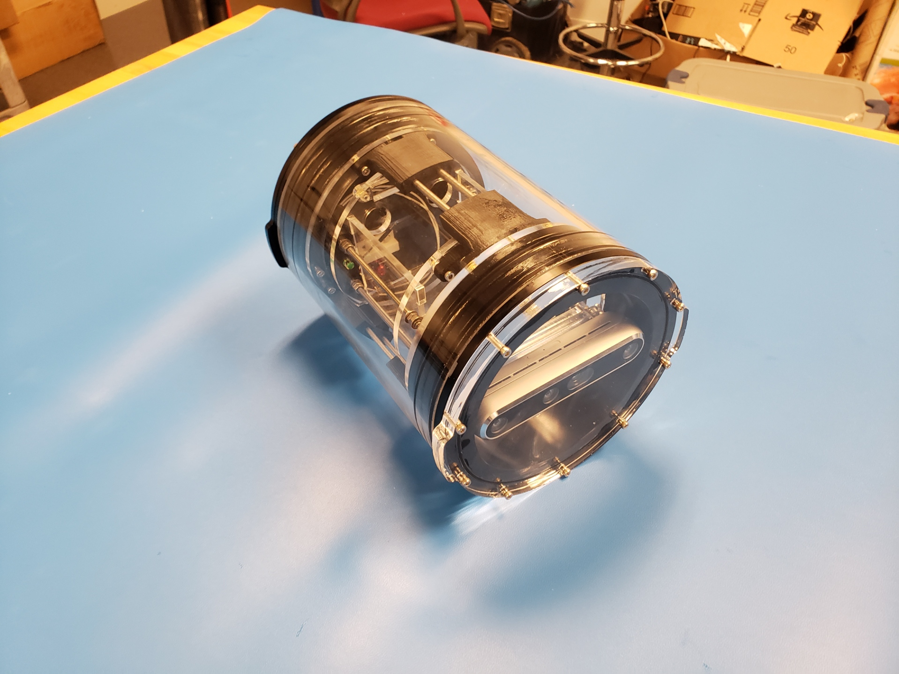
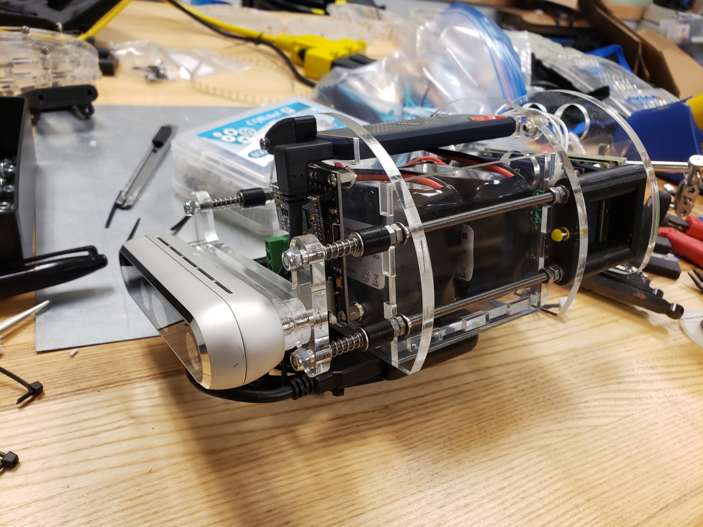

FishSense
CAD


First module
 There was a prototype of the system before I came on to the project that utilized a Raspberry Pi as the processor. It had issues with buoyancy, because the enclosure was mostly empty. My design switched it over to a NVIDIA Jetson TX-2 with a custom power board.
My design improved a lot of major aspects, but I also made a lot of small mistakes throughout the design process, and unfortunately, a few with the final design. There are a few bolts that were too long, and we came up with a few more features to implement. Some would be done on a new version of the module, and some can be applied to the current ones. Also, since I designed the assembly from the bottom up, with in-place relations and many, many external references, it is difficult to modify certain parts. I'm working on making all mechanical interfaces defined by sketch blocks.